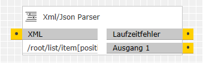
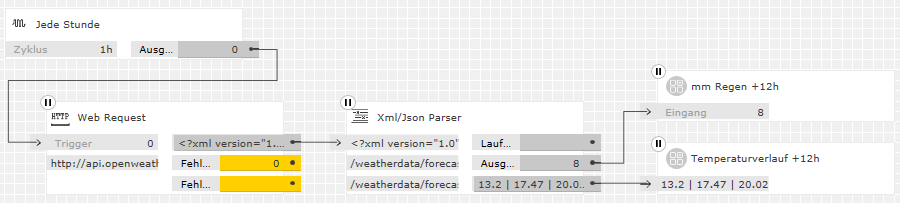
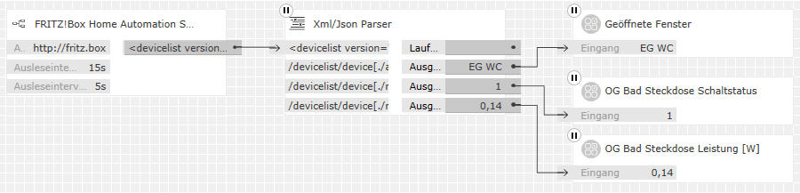

XML/JSON-Parser
XML/JSON-Parser
Beschreibung
Dieser Baustein extrahiert aus einem XML- oder JSON-Datensatz am Eingang anhand einer oder mehrerer XPath-Abfragen entsprechende Ausgabedaten. So lassen sich Daten aus Webservices für die Visualisierung oder Weiterverarbeitung nutzen.
Folgende Arten von Ausgabedaten können extrahiert werden:
- Einzelne Textelemente oder Verkettungen mehrerer Textelemente
- Einzelne Zahlen oder Aufsummierungen mehrerer Zahlen
Eingänge
Bezeichnung |
Porttyp |
Beschreibung |
|---|---|---|
|
XML oder JSON |
Text |
Die Beschriftung des Eingangs und das erwartete Format des Eingabetexts hängt von der Einstellung des Parameters "Eingangskodierung" ab. |
Ausgänge
Bezeichnung |
Porttyp |
Beschreibung |
|---|---|---|
|
Ausgang 1 |
Any |
Die Anzahl der Ausgänge hängt von der Einstellung des Parameters "Anzahl der Pfade und Ausgänge" ab. Sollte die Eingabe benannte HTML-Zeichen (HTML entities) enthalten, so werden diese in Ausgabetexten dekodiert. (z. B. wird ä zu ä). Ausgabewerte konvertieren bei Weitergabe an nachfolgende Eingänge automatisch je nach deren Typ, ohne dass dazu ein Typkonverter nötig wäre. Welche Konvertierungen möglich sind, findet man in der Gira-Hilfe unter "Übersicht der möglichen Porttyp-Konvertierungen". |
|
Laufzeitfehler |
Text |
Fehler in den Pfad-Parametern oder bei der Weiterverarbeitung der Daten werden an diesem Ausgang als Texte gemeldet. Im Fall solcher Fehler bleibt der entsprechende Datenausgang unverändert. |
Parameter
Bezeichnung |
Porttyp |
Als Eingang zuschaltbar? |
Beschreibung |
|---|---|---|---|
|
Eingangskodierung |
Auswahl |
nein |
Dieser Parameter legt fest, ob am Eingang XML- oder JSON-formatierte Daten erwartet werden. In beiden Fällen werden benannte HTML-Zeichen (HTML entities) ggf. dekodiert, wie oben im Abschnitt "Ausgänge" beschrieben. Stehen von einem Webservice wahlweise XML- oder JSON-Daten zur Verfügung, so bevorzugt man das XML-Format, weil es das native Format dieses Logikbausteins ist. Für Besonderheiten bei der Behandlung von JSON-Daten siehe bei den Pfad-Parametern. |
|
Anzahl der Pfade und Ausgänge |
Integer |
nein |
Dieser Parameter legt die Anzahl der Ausgänge des Bausteins im Bereich 1..50 fest. Da jeder Ausgang seinen eigenen XPath-Pfad hat, legt dies auch die Anzahl der Pfad-Parameter fest. |
|
Pfad 1 |
String |
nein |
Diese Parameter legen fest, welche Elemente des Eingabetexts für die weitere Verarbeitung jeweils ausgewählt werden. Die verwendete Syntax folgt dem weit verbreiteten Standard XPath. Anders als bei vielen Logikbausteinen und Programmiersprachen beginnt die Zählung der Listeneinträge beim Index 1. Im Fall von JSON-Eingabetext sind folgende weitere Besonderheiten zu beachten:
Beispiel: Aus der JSON-OpenWeatherMap-Vorhersage sollen die Temperaturen der nächsten
12 Stunden (die stehen in den ersten vier list-Einträgen) ausgewählt
werden. Der folgende Pfad wählt die entsprechenden Einträge aus:
/root/list/item[position()<5]/main/temp
|
|
Art der Pfad- |
Auswahl |
nein |
Diese Parameter legen fest, wie viele Elemente der jeweilige XPath-Pfad auswählt und wie die ausgewählten Daten interpretiert und weiter verarbeitet werden. Möglich sind die folgenden Arten:
In Ausgabetexten enthaltene benannte HTML-Zeichen (HTML entities) werden ggf. dekodiert, wie oben im Abschnitt "Ausgänge" beschrieben. Finden sich mit der Pfad-Angabe im Eingabetext keine Einträge, so wird dies:
|
|
Skalierungs- |
Number |
nein |
Dieser Parameter steht zur Verfügung, wenn der entsprechende Parameter "Art der Pfadauswahl" einen numerischen Ausgabewert festgelegt hat. Er legt fest, mit welchem Faktor der numerische Datenwert multipliziert wird, um den endgültigen Ausgabewert zu erhalten. Wenn das Feld leer bleibt oder den Wert 1 enthält, wird nicht skaliert, also der Datenwert unverändert ausgegeben. |
|
Textvorsatz 1 |
Text |
nein |
Dieser Parameter steht zur Verfügung, wenn der entsprechende Parameter "Art der Pfadauswahl" auf "Erster Treffer als Text" eingestellt ist. Er legt fest, welcher Text vor dem ausgewählten Datentext ausgegeben wird. Wenn das Feld leer bleibt, wird nichts vor dem Datentext ausgegeben. |
|
Text-Trenner 1 |
Text |
nein |
Dieser Parameter steht zur Verfügung, wenn der entsprechende Parameter "Art der Pfadauswahl" auf "Alle Treffer als verketteter Text" eingestellt ist. Er legt fest, welcher Text zwischen mehreren ausgewählten Datentexten eingefügt wird. Wenn das Feld leer bleibt, wird nichts zwischen den verketteten Datentexten eingefügt. |
Beispiele
Vorausschauende Witterungsaufschaltung
Eine Bewässerungsanlage soll Wasser sparen, indem das Bewässerungsvolumen um die zu erwartenden Niederschläge der nächsten 12 Stunden reduziert wird. Zudem soll auch der Temperaturverlauf über den selben Zeitraum visualisiert werden. Die Vorhersagedaten werden vom Online-Wetterdienst OpenWeathermap.org als XML-Daten bezogen (gezeigt sind beispielhafte Simulationsdaten):

Hinweis: Der zur Anforderung der Wettervorhersagedaten verwendete Baustein "Web Request" stammt von Daniel Albuschat und steht auf seiner github-Präsenz zum Download bereit. Alternativ kann auch der Baustein "HTTP GET Request" von Fabian Fischer verwendet werden (Download von knx-forum.de)
Die als Parameter verwendete URL ist:
http://api.openweathermap.org/data/2.5/forecast?appid=Id&units=metric&mode=xml&q=Ort
Darin sind Id und Ort gemäß der
OpenWeatherMap-API-Anleitung
(englisch) durch eigene Angaben zu ersetzen.
Der XML-Parser verwendet zur Auswertung der XML-Daten zwei XPath-Pfade, die jeweils die ersten 4 Niederschlags- bzw. Temperaturvorhersagewerte auswählen:
- Pfad 1: /weatherdata/forecast/time[position()<5]/precipitation/@value
- Pfad 2: /weatherdata/forecast/time[position()<5]/temperature/@value
Die folgenden Einstellungen legen fest, wie mit den ausgewählten Werten verfahren werden soll, um die beiden Ausgabewerte zu erzeugen:
- Art der Pfadauswahl 1: Alle Treffer als summierte Zahl
- Art der Pfadauswahl 2: Alle Treffer als verketteter Text
- Skalierungsfaktor 1: leer oder 1
- Text-Trenner 2: |
Wie man am Temperaturverlauf erkennt, liefert OpenWeatherMap die Vorhersagedaten mit zwei Nachkommastellen. Natürlich ist die wirkliche Genauigkeit viel geringer. Deshalb wird die Regenmenge auf eine Ganzzahl gerundet, indem der Ausgang auf einen INTEGER-Datenpunkt verbunden ist. Der so gewonnene Wert kann auf dem KNX-Bus als DPT 7.011 weiter verarbeitet werden.
Einbindung von FRITZ!Box Smart-Home-Geräten
In einem Bestandsbau haben nicht alle Räume KNX-Anbindung. Dennoch soll auch in diesen Räumen der Fensterstatus erfasst und einige Stromverbraucher über KNX geschaltet und visualisiert werden. Für Benutzer einer entsprechend ausgestatteten FRITZ!Box bieten sich dazu Funksteckdosen und Fensterkontakte nach dem DECT-HAN-FUN-Standard an. Diese können über ein XML-Web-Interface abgefragt werden (gezeigt sind wieder beispielhafte Simulationsdaten):

Hinweis: Der zur Anforderung der XML-Daten verwendete Baustein "FRITZ!Box Home Automation Status" stammt von Fabian Fischer und steht im Download-Bereich des KNX-User-Forums unter der ID 20000064 zum Download bereit. Andere Bausteine desselben Autors erlauben neben der hier gezeigten Statusabfrage das Schalten von Verbrauchern an den DECT-Funksteckdosen.
Der Parser verwendet zur Verarbeitung der XML-Daten von der FRITZ!Box drei XPath-Pfade mit den folgenden Einstellungen (bei den Pfaden können je nach FRITZ!OS-Version und verwendeten DECT-Geräten Änderungen nötig sein):
- Pfad 1: /devicelist/device[./alert/state="1"]/name
- Pfad 2: /devicelist/device[./name="Steckdose 1"]/switch/state
- Pfad 3: /devicelist/device[./name="Steckdose 1"]/powermeter/power
- Art der Pfadauswahl 1: Alle Treffer als verketteter Text
- Art der Pfadauswahl 2: Erster Treffer als Text
- Art der Pfadauswahl 3: Erster Treffer als Zahl
- Text-Trenner 1: ,
- Textvorsatz 2: leer
- Skalierungsfaktor 3: 0,001
Aus dem Text am Ausgang 2 entsteht durch Verknüpfung mit einem BINARY-Datenpunkt der Schaltstatus (KNX-DPT 1.x). Aus dem Leistungselement, das die FRITZ!Box als Ganzzahl in Milliwatt liefert, entsteht durch die Skalierung ein FLOAT-Datenpunkt in der Einheit Watt (KNX-DPT 14.056). In ähnlicher Weise könnte auch die aufsummierte elektrische Arbeit oder die Temperatur ausgegeben werden.